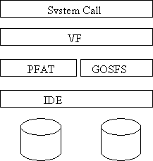

CMSC 412 Programming Assignment #4
Due May 1, 2003 (5:00 PM)
The purpose of this project is to add a new filesystem to GeekOS.
The main part of this project is to develop a new filesystem for the GeekOS. This filesystem will reside on the second IDE disk drive in the Bochs emulator. This will allow you to continue to use your existing pfat drive to load user programs while you test your filesystem.
GOSFS will provide a filesystem that includes multiple directories, access control (via user ids), and long file name support. The access control will be added as part of project #5.
Each user space process will have an open file table that keeps track of which files that process can currently read and write. Any user process should be able to have 10 files open at once. We have provided the code to keep track of open files, all you need to do is add the new system calls to your user space library and adapt your struct User to have the addition information needed by the vfs layer (explained below).
The mount system call allows you to associate a filesystem with a place in the file name hierarchy. The mount call is implemented as part of the vfs code we supply. However, you will need to modify the init code to call mount to mount the pfat file system on drive 0 onto /c.

Since GEEKOS will have two types of filesystems (PFAT and GOSFS), it will have a virtual filesystem layer (VFS) to handle sending requests to an appropriate filesystem. We have provided an implementation of the VFS layer in the file vfs.c. The VFS layer will call the appropriate GOSFS routines when a file operation refers a file in the GOSFS filesystem.
Your filesystem should support long filenames up to 256 bytes (including a null at the end). You should maintain a free disk block list via a bit vector (as described in class). A library called bitset is provided that manages a set of bits and provides functions to find bits that are 0 (i.e. correspond to free disk blocks). All disk allocations will be in units of 4KB (i.e. 8 physical disk blocks). The total file name (i.e. a full path) will be no more than 1024 characters. Directories will consist of up to 60 files each (i.e. they need to fit into one 4KB disk block).
The seek system call should take an absolute offset from the beginning of the file.
You will use a version of indexed allocation to represent the blocks of your filesystem. The first 8 4KB blocks are direct blocks, the next 1024 blocks are indirect blocks. The filesystem should provide a way to implement the next 1 million blocks as double indirect blocks, but you are not required to implement that interface.
The following system calls will need to be added to your operating system.
|
Call |
User Function |
Call Number |
Error Return |
Normal Return |
|
SYS_MOUNT |
Mount |
13 |
-1 |
0 |
|
SYS_OPEN |
Open |
14 |
-1 |
new file descriptor number |
|
SYS_CLOSE |
Close |
15 |
-1 |
0 |
|
SYS_DELETE |
Delete |
16 |
-1 |
0 |
|
SYS_READ |
Read |
17 |
-1 |
number of bytes read |
|
SYS_WRITE |
Write |
18 |
-1 |
number of bytes written |
|
SYS_STAT |
State |
19 |
-1 |
0 |
|
SYS_SEEK |
Seek |
20 |
-1 |
0 |
|
SYS_CREATEDIR |
CreateDirectory |
21 |
-1 |
0 |
|
SYS_SYNC |
Sync |
22 |
-1 |
0 |
|
SYS_FORMAT |
Format |
23 |
-1 |
0 |
You should submit a compressed tar file for the project4 directory.
bitset.h header file for a bitset interface
bitset.c code to implement bitsets
vfs.h virtual filesystem layer
vfs.c code for virtual filesystem layer
fileio.h interface constants and typedefs shared between kernel/user space
gosfs.h interface file for file system.